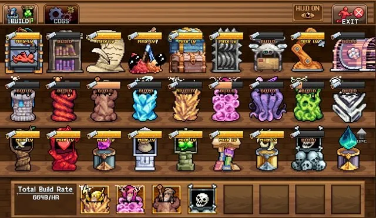
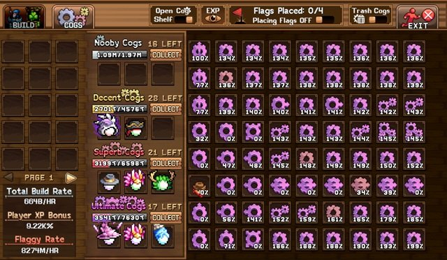
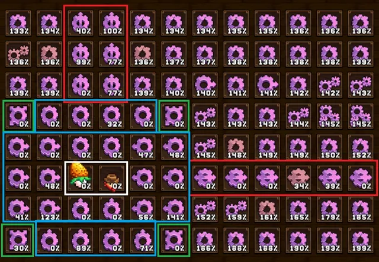
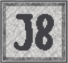
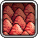
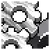

이 가이드는 Construction 보드의 건설 속도를 극대화하는 방법을 안내합니다. World 3 마을 스킬인 Construction은 얼핏 단순해 보이지만 전체 계정 진행에 큰 영향을 미치며, 올바른 코그 배치는 유틸리티 건물, 마법사 타워, 신전 해금 시간을 크게 단축시킵니다. 이 페이지에서는 Construction 시스템의 기본 구조, 진행 팁, 코그 보드 최적화 방법, 그리고 가장 중요한 보너스 소스를 설명합니다.
Construction 기본

Construction은 복잡한 World 3 스킬이지만 계정의 여러 요소에 영향을 미치므로 최적화할 가치가 있습니다. Construction 스킬은 Build 탭과 Cogs 탭으로 나뉩니다.
Build 탭
Build 탭은 건설 속도와 사용 가능한 슬롯을 활용해 다양한 건물을 짓습니다.
- 유틸리티 타워 (Utility Towers): 새로운 World 3 메커니즘 또는 기타 계정 버프를 해금합니다.
- 마법사 타워 (Wizard Towers): World 3 타워 디펜스 미니게임에서 사용됩니다.
- Shrines(신전): AFK(방치) 시간에 비례해 강해지는 캐릭터 버프를 제공합니다.

건물 레벨 업에는 World 3 정제소 소금 및 기타 자원이 필요합니다. 일반적으로 각 행의 오른쪽 끝까지 최대한 진행하는 것이 모든 옵션을 해금하는 데 유리하지만, 합리적인 기간(예: 1주일 이내) 안에 해금할 수 있는 건물에 한해 추진하세요. 그 다음 우선순위는 모든 3D Printer 슬롯 해금, 영혼 생성을 위한 기본 예배 타워 확보, 그 이후 계정 필요에 따른 업그레이드 순입니다.
Cogs 탭
Cogs 탭에서는 캐릭터를 코그 보드에 배치해 건설 속도를 높이거나, 코그 선반에서 코그를 제작하도록 할당합니다. 코그는 보드에 배치하여 캐릭터 경험치, 깃발 속도, 건설 속도 버프를 제공할 수 있습니다. 코그 등급은 건설 레벨 1, 15, 40, 70에서 각각 해금되는 Nooby, Decent, Superb, Ultimate 네 단계로 성장합니다. 또한 Gaming Superbits(Duper Tab) 업그레이드를 통해 Ultimate Cog 5개 이상을 Jewel Cog으로 변환하는 더 강력한 보석 코그를 해금할 수 있습니다.
전체 코그 보드는 잠긴 칸에 깃발을 일정 시간 배치하여 해금해야 하며, 이것이 첫 번째 우선 목표입니다. 이를 위해 방향성 Flaggy Rate(캐릭터 방향)나 Speed to Flags(깃발 방향)를 사용하세요.
전체 코그 보드를 해금한 후에는 Squire(들)를 보드에 배치하고, 주변을 가장 높은 방향성 Player Construction XP 코그로 둘러싸 Squire의 건설 레벨을 극대화하세요. 방향성이 없는 코그는 가능한 한 높은 건설 EXP 값을 가진 것으로 배치하며, 코그 선반 창 토글 옆의 눈 버튼을 클릭해 확인할 수 있습니다.
건설 레벨을 최대화하면 건설 스킬 레벨에 따라 건설 속도를 추가하는 주황색 연금술 버블 Carpenter의 효과가 강화됩니다. Squire는 추가 건설 속도를 주는 Redox Rates 탤런트와 추가 건설 EXP를 주는 Sharper Saws 탤런트를 보유해 이 역할에 가장 적합합니다. 그 외 모든 캐릭터는 아래에 표시된 대로 코그 선반에서 최대한 높은 코그를 생산하도록 배치합니다.
최적 코그 보드 배치
최적의 코그 보드 배치는 다음과 같습니다.
- Squire(들)를 건설 보드에 배치하고, 그 외 모든 캐릭터는 코그 선반에 배치합니다.
- Squire(들) 방향으로 향하는 방향성 코그 중 % Player Construct XP 값이 높은 것들을 조합해 배치합니다.
- 나머지 코그는 최대한 높은 건설 EXP 보너스를 주는 것으로 최적화합니다.

이 배치는 Squire(흰색), Omni(초록), Collumm/Rowow(빨강), Uppy/Downer/Leff/Rite(파랑)의 조합으로 구성됩니다.
파란 영역은 코그 운에 따라 유연하게 조정할 수 있지만, 각 Squire에 최대한 많은 코그 방향이 닿도록 배치하세요. 예를 들어 왼쪽 면에는 Rite 코그를 모두 사용합니다.
프리미엄 Gem Shop 코그가 있다면 파란 칸 대신 Yang Mongo Cogs를 Squire(들) 옆이나 위에 배치하세요. Yin Excogia!!!는 무한 범위를 가지므로 방향성 영역을 희생하지 않도록 색칠된 영역 바깥에 배치합니다.
중요한 Construction 버프
다음은 건설 진행에 가장 중요한 부스트들입니다.

| 소스 | 효과 | 비고 |
|---|---|---|
| World 7 Research – Tiny Cogs | 매일 소형 코그 생성 | World 7 리서치에서 제공되는 소형 코그는 게임 판도를 바꾸는 건설 부스트입니다. 매일 초기화 시 자동으로 코그 인벤토리에 배치되며, 등급에 따라 깃발 속도, 건설 EXP, 건설 속도에 막대한 배율을 부여합니다. |
| 연금술 버블 – Carpenter | 건설 레벨당 건설 속도 % | 건설 속도의 주요 소스입니다. Explosive Salts를 사용하므로 연금술 바겐 태그를 활용해 비용을 낮추세요. 아톰으로 버블을 레벨업할 수 있게 되면 레벨 4,950(99% 값)을 목표로 하세요. |
| 연금술 버블 – Call Me Bob | 건설 EXP 획득량 % | 건설 EXP의 주요 소스로 선형 증가합니다. 사용 가능한 Moustache Combs로 레벨을 높이고, 아톰 투자가 가능해지면 버블 레벨 5,000~10,000을 목표로 하세요. |
 Squire 탤런트 – Redox Rates |
보관함의 Redox Salts 10의 제곱당 건설 속도 % 증가 | 이 탤런트 덕분에 Squire는 어떤 캐릭터보다 높은 건설 속도를 냅니다. |
 World 3 Merit Shop – Build/Food 슬롯 World 3 Merit Shop – Build/Food 슬롯 |
추가 건설 슬롯 해금 (1번째, 3번째 구매) | 슬롯 추가는 사실상 건설 속도 배율 역할을 합니다. |
 Trimmed Construction Slots Trimmed Construction Slots |
트림 슬롯 추가 (최소 3배 건설 속도) | 트림 슬롯은 건설 속도 배율로 최소 3배를 부여하며, 모두 해금하는 것이 중요합니다. 해금처: World 3 Atom Collider(Nitrogen), World 4 Laboratory(Sapphire Rhinestone), World 5 Hole(Gambit), World 7 Legend Talent(Red 4), 이벤트 상점(Golden Square) |
 연금술 바이알 – Shinyfin Stew 연금술 바이알 – Shinyfin Stew |
건설 속도 | World 3 Equinox Valley의 자원이 필요합니다. |
| 연금술 바이알 – Turtle Tisane | 건설 속도 | World 6의 Sneaking Jade Emporium에서 구매 가능합니다. |
 Gem Shop – Zen Cogs |
Yin 및 Yang 코그 해금 | Gem Shop에서 강력한 건설 속도 보너스를 제공합니다. |
그 외 몇 가지 건설 보너스가 Idleon 위키에 더 있으나, 위 목록이 가장 큰 부스트를 제공하는 집중 추천 항목입니다.